Green Tea & Lemongrass
Green Tea
Fris en licht. Voor wie houdt van iets puurs dat je wakker zet zonder drama.
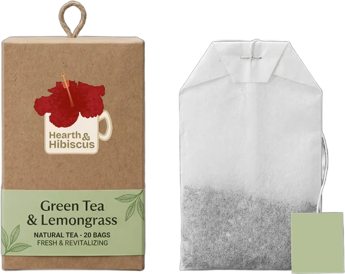
Lekker: ijskoud met een schijfje citroen.
Fruitige thee, vol kleur en vol smaak. Warm met vrienden of ijskoud na de les: jij kiest.
Ontdek je smaakGratis inschrijven. Geen spam, wel thee.
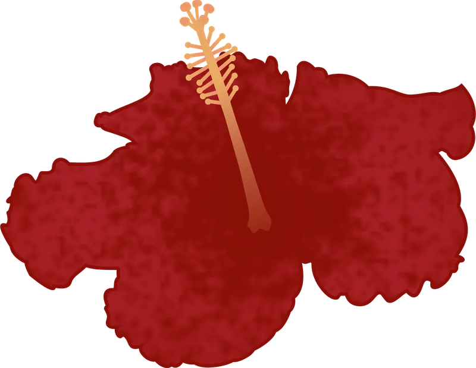
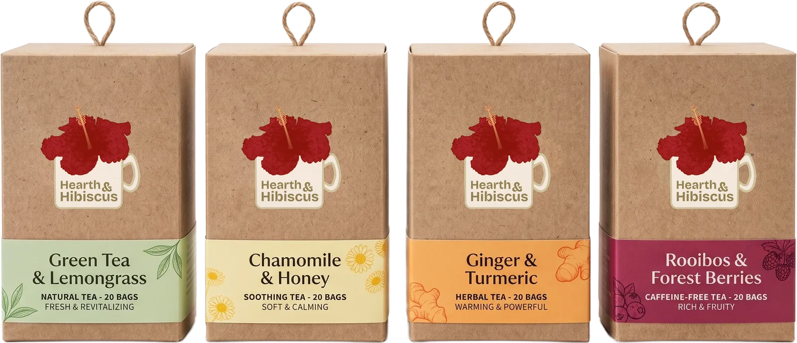
Geen thee omdat het "moet". Wel thee omdat ze gewoon lekker is. Hearth & Hibiscus is fruitig, fris en zo kleurrijk dat je glas er vrolijk van wordt. Een gezond alternatief voor frisdrank? Check. Saai? Nooit.
Fruitig, fris of lekker pittig. Er is altijd een smaak die bij je moment past.
Van zacht geel tot diep robijnrood. Thee die je ook met je ogen drinkt.
Een frisse keuze zonder suikerbom. Gewoon lekker, zonder te preken.
Team zoet en zacht of team pittig en fris? Swipe door en kies je favoriet.
Green Tea & Lemongrass
Fris en licht. Voor wie houdt van iets puurs dat je wakker zet zonder drama.

Lekker: ijskoud met een schijfje citroen.
Chamomile & Honey
Zacht en zonnig. Je warme dekentje in een kop, perfect na een lange dag.
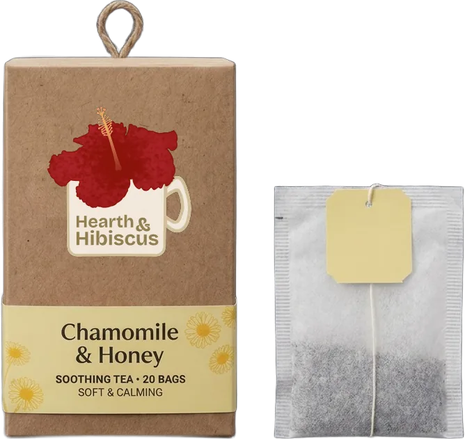
Lekker: warm, met een lepeltje honing.
Ginger & Turmeric
Pittig, met een kick. Voor wie zin heeft in iets met karakter.
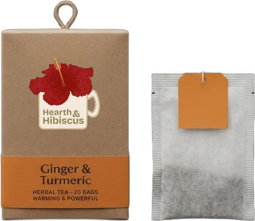
Lekker: als ijsthee met sinaasappel.
Rooibos & Forest Berries
Rond en vol. Zacht van smaak en mooi diep van kleur, ideaal voor een avond met vrienden.
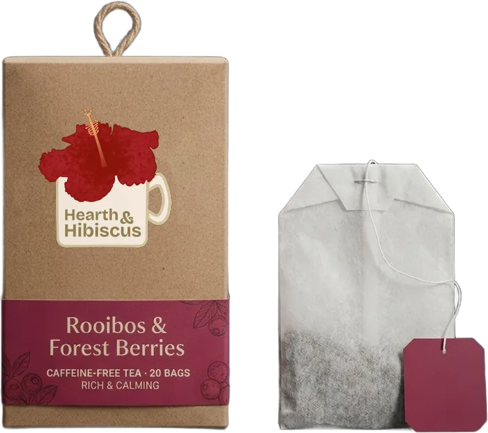
Lekker: warm of koud, zonder cafeïne.
Twijfel je? 5 korte vragen en je weet welke smaak bij jou past.
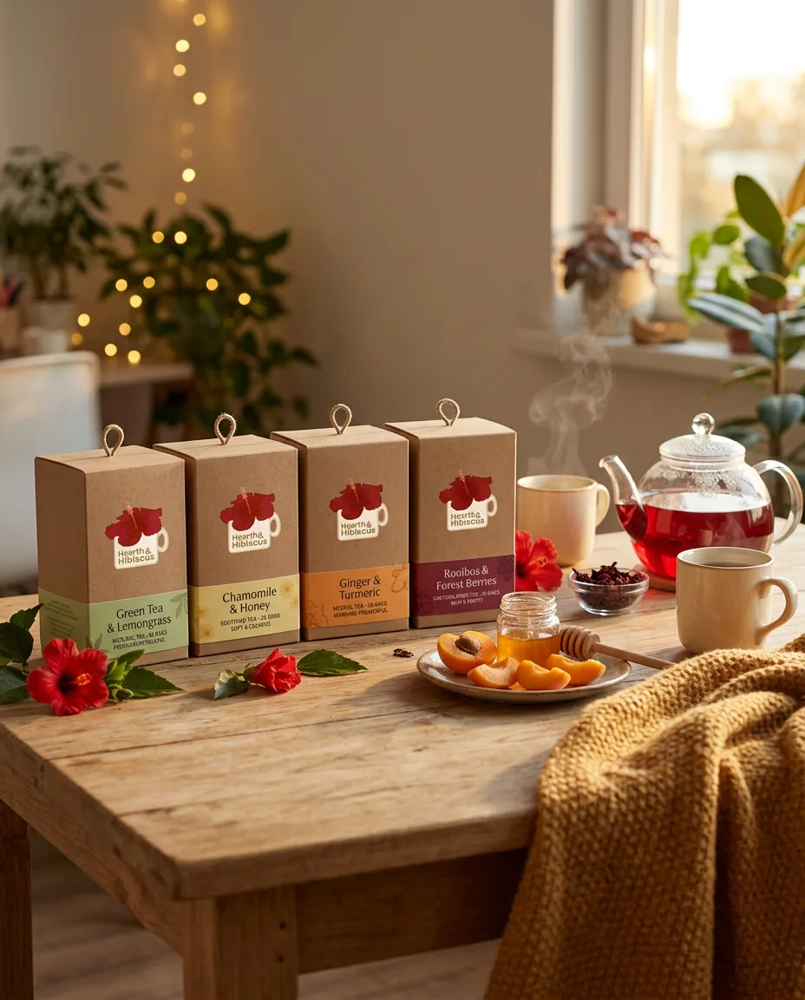
Thee is meer dan een drankje. Het is die avond op kot, dat gesprek dat uitloopt, die pauze tussen twee lessen. Toon ons jouw theemoment met #HearthAndHibiscus. Elke week zetten we onze favoriet in de spotlight op Instagram.
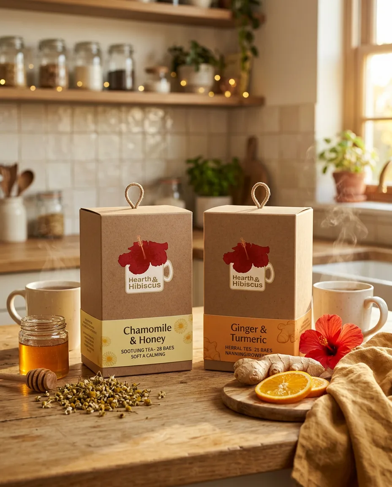
Zo zie je ons op Instagram
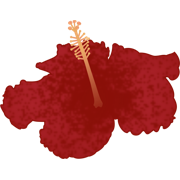
hearthandhibiscus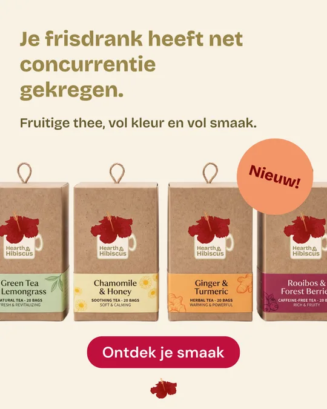
1.248 vind-ik-leuks
hearthandhibiscus Je frisdrank heeft net concurrentie gekregen. 🌺 Vier smaken, vol kleur.
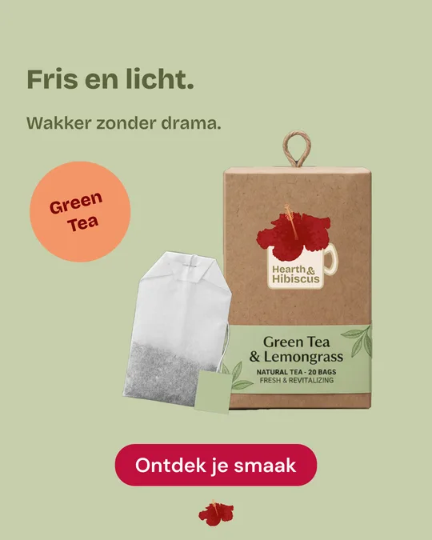
862 vind-ik-leuks
hearthandhibiscus Fris en licht. Green Tea & Lemongrass zet je wakker zonder drama. 🍃
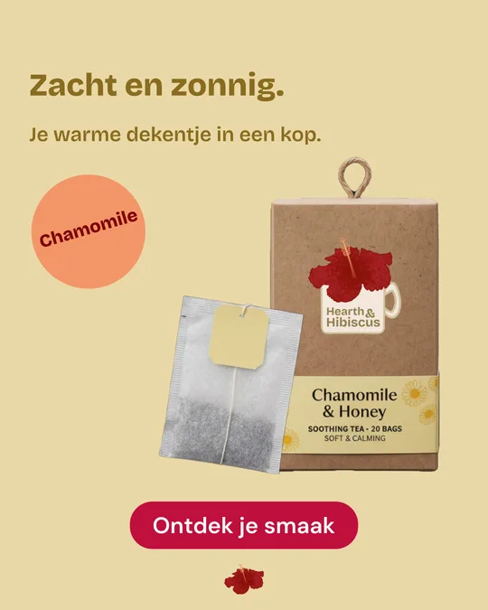
974 vind-ik-leuks
hearthandhibiscus Zacht en zonnig. Chamomile & Honey, je warme dekentje in een kop. ☀️
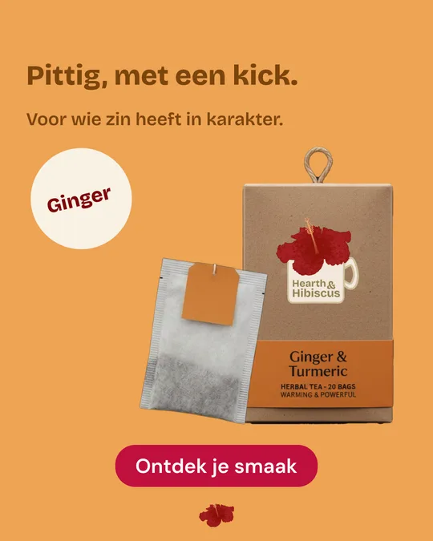
1.031 vind-ik-leuks
hearthandhibiscus Pittig, met een kick. Ginger & Turmeric voor wie zin heeft in karakter. 🔥
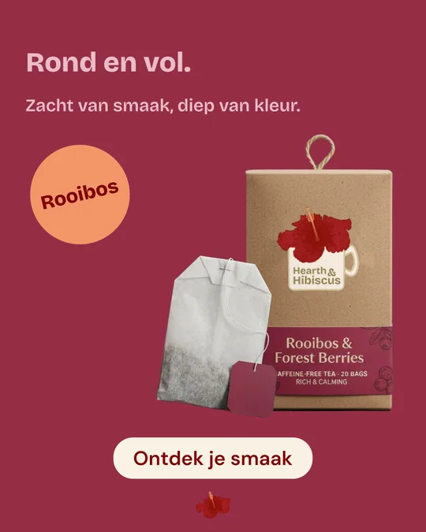
1.117 vind-ik-leuks
hearthandhibiscus Rond en vol. Rooibos & Forest Berries: zacht van smaak, diep van kleur. 🍒
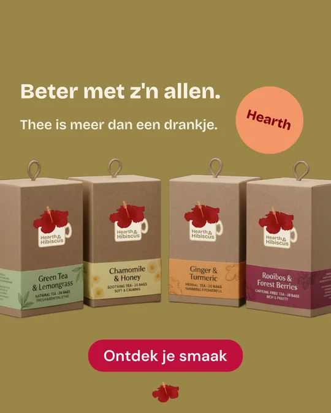
1.502 vind-ik-leuks
hearthandhibiscus Beter met z'n allen. Toon ons jouw theemoment met #HearthAndHibiscus 🫖
Schrijf je in en krijg meteen een welkomstmail met alle smaken, recepten en nieuwtjes. Kort, kleurrijk en nooit te vaak.
Check je inbox: je welkomstmail is onderweg. Niets gezien? Kijk even in je spam of promoties.
Bekijk de smakenJa. Je krijgt smaak en kleur, zonder bubbels. Zoet nodig? Een beetje honing of fruit doet wonders.
Zeker. Alle vier de smaken zijn top als ijsthee. Het recept staat hierboven.
Eerst een welkomstmail, daarna af en toe een nieuwsbrief. Geen spam, beloofd.
Altijd, met één klik onderaan elke mail.